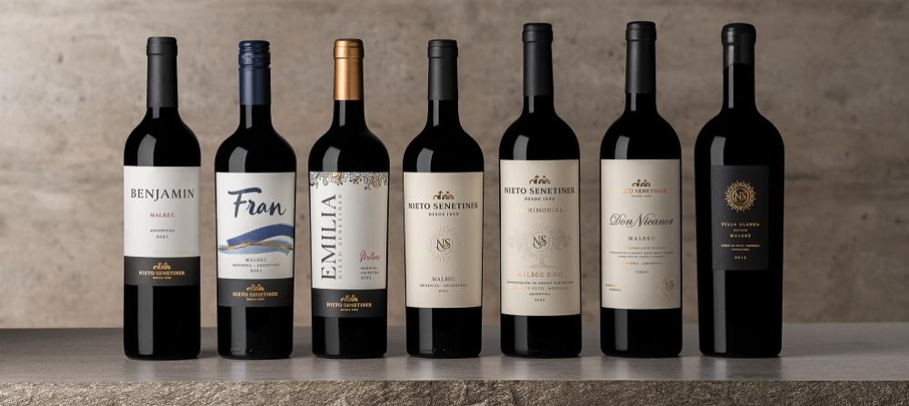
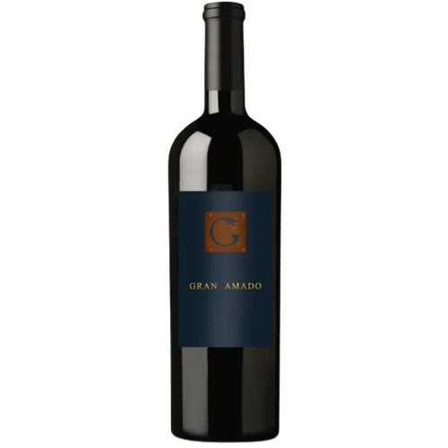
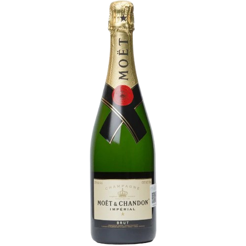

Descubre los mejores vinos seleccionados para ti.
/*No terminado. Cambiar img, li y h*/
Gran Amado Blend
Bodega: Viñas de Garza | País: México | Región: Valle de Guadalupe | ABV: 13.5% | Vol: 750 ml | Tipo de uva: blend | Tipo de vino: Tinto | Crianza: 30 meses
Se trata de un extraordinario ensamble de cabernet sauvignon, merlot, tempranillo y zinfandel. Uno de los mejores vinos mexicanos que podrás encontrar. Esta mezcla de 4 uvas con 30 meses de añejamiento en barricas nuevas, es un vino de gran carácter, complejo, gran intensidad y mucha estructura.
Presenta un color muy intenso de tono rojo ciruela con matices anaranjados que nos anticipan una buena madurez. Muy limpio, nítido y brillante, lo que nos muestra un vino sano y de gran presentación. Gran densidad, lo que nos deja ver una buena generosidad en la presencia del alcohol.
Desprende un aroma muy abierto y expresivo. Gran complejidad, los varietales se integran de modo sobresaliente denotando aromas a frutos rojos como casis, moras, grosellas y arándanos. Sumado a la frutalidad aparecen notas especiadas, toques de clavo y un final donde la barrica se muestra con sus toques de roble y notas ligeramente ahumadas.


Vino Rosado Casa Madero V
Bodega: Casa Madero | Región: Parras de la Fuente, Coahuila | ABV: 12.5% | Vol: 750 ml | Tipo de uva: blend | Tipo de vino: rosado | Crianza: ninguna
Casa Madero elabora este vino rosado con un blend de Shiraz en mayor proporción y otras uvas. Este vino no tiene crianza en barrica.
Visualmente presenta un color rosa pálido con destellos cobrizos mientras que en nariz encontramos aromas a rosas y violetas, cereza, fresa, durazno, chabacano, cáscara de toronja, granada y mandarina.
En boca destaca por su entrada suave y refrescante, reflejando los aromas de frutos y flores. Fresas, mango, granada, rosas. Permanente en boca con gran armonía.
Möet & Chandon Brut Imperial
Bodega: Möet & Chandon | Denominación de origen: Champagne | País: Francia | Región: Champagne | ABV: 12% | Vo: 750 ml | Tipo de uva: Pinot Noir 30 a 40%, Pinot Meunier 30 a 40% y Chardonnay 20 a 30% | Tipo de vino: Blanco espumoso | Método: Champenoise
Möet & Chandon Brut Imperial es elaborado en Champagne, Francia y es es el champán más emblemático de la bodega Möet & Chandon. Fue creado en 1869 y se distingue por su bouquet chispeante. Se elabora utilizando el método champenoise.
Visualmente presenta un color amarillo pajizo dorado con destellos verdes con finas burbujas constantes que revientan en la superficie. En nariz destacan los aromas con notas de manzana verde y cítricos. Frescura de los matices minerales y las flores blancas. Elegancia de las notas rubias.
En boca detectamos sabores de fruta blanca (pera, melocotón, manzana). Finas burbujas. Cítricos y matices de grosella.
